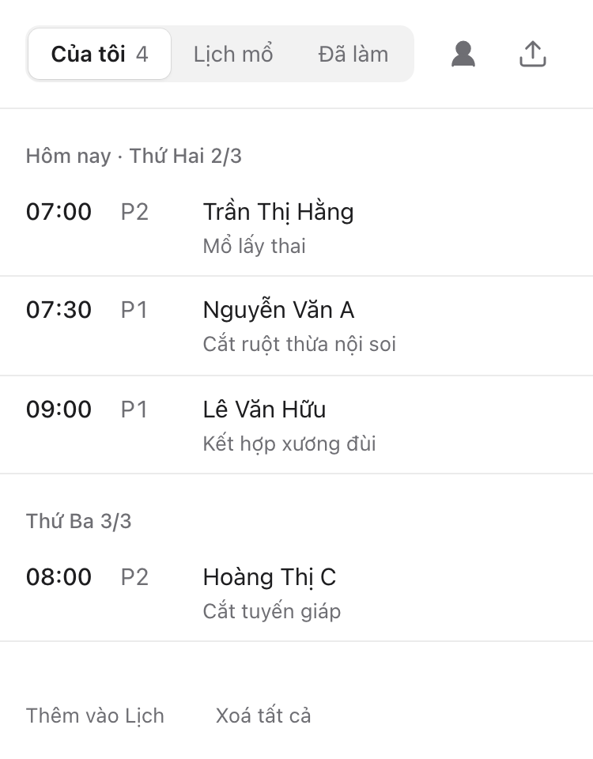

Ca Trực
Xem ca mổ của mình theo ngày, và thấy ngay chỗ thay đổi khi có lịch mới.
Mở bản web
Bản iPhone đang thử nghiệm qua TestFlight, theo lời mời.

Lịch mổ từ file hoặc link
File .xlsx, .xls, hoặc link Google Sheets, Drive, OneDrive, SharePoint. Link tự đồng bộ.
Ca của tôi
Chạm để đánh dấu ca của bạn. Khi có lịch mới, ca đổi phòng hay đổi giờ hiện ngay.
Thêm vào Lịch
Đưa các ca sắp tới vào Lịch của iPhone, chỉ có phòng và phương pháp.
Sổ ca
Các ca đã làm theo tháng, số ca và tổng giờ mổ. Xuất CSV cho Excel.
Đồng bộ mã hoá
Ca đã đánh dấu đồng bộ giữa các máy, mã hoá đầu cuối. Máy chủ không đọc được.
Lịch nằm trên máy
Lịch mổ được đọc và lưu trên máy của bạn, không gửi lên máy chủ.